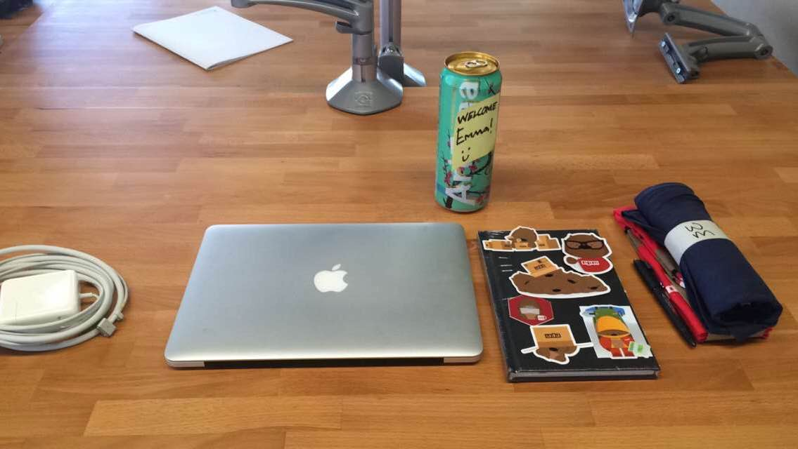

6:55am, I woke up again, sweaty: I had that dream. I had shipped code without running all the tests correctly and now everything was in disarray—I had broken the internet.
Well, thankfully, by the end of the day that had not happened. In fact, I felt like I was getting to contribute to the future of the internet and open source one step at a time at npmjs. (Now, some background: npm is a True Ventures portfolio company and through an interview process, I was somehow chosen for a summer internship in their offices in downtown Oakland).
My day didn’t actually start at npm; it started at the true ventures office in downtown San Francisco. Alongside nine other college-age students, we are the interns. It’s a weird sensation—knowing you are soooo not qualified to be around these absolute geniuses and having to recognize they probably feel that way about you. Of those students, I might be of around three who are programming, the rest are mostly marketing. We’re from all parts of the country and different colleges and different majors.
Christiaan Vorkink, our director, read to us recommendations from applicants. “Best student I’ve ever met…”, “in the top 1% of her peers”, “without a doubt”, “one of”, “the most brilliant”, “engineers on campus”, etc. It’s pretty intimidating to hear these sorts of things when your recommendation probably includes something like “only set classroom on fire once.” What shook me a bit was when he told us these were the rejects.
I recognize impostor syndrome as an issue in Silicon Valley, especially for women of color, but wow,I should be flipping burgers right now, I thought.
And with our complimentary swag, we went our separate ways as I met up the cast and crew of npm at Rudy’s Cafe and immediately felt welcome. Arizona is my favorite! And stickers! I love stickers! I attended my first official meeting (I’m working on the CLI team), and learned some pretty interesting things about both npm itself and the open source community. Alongside that, I really appreciate npm for its commitment to work-life balance, something I think a lot of interns can forget in their goal to be all-around impressive.

npm offerings to summon Emma
I even closed issue #12951 (spoiler alert, it was spam). Okay, so it was spam, but I felt like part of a team! It felt like I was really contributing to open source in a more meaningful way than I had normally gotten to.
And at the start of the day, I felt nervous and intimidated. I can’t stay I still don’t! But I feel a lot more confident that I belong here at a wonderful place like npm, working with wonderful people. I’m excited for the awesome projects and contributions I’ll get to make this summer.
Here’s to True Ventures, npm, and stress balls!